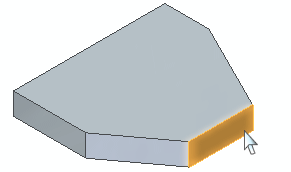
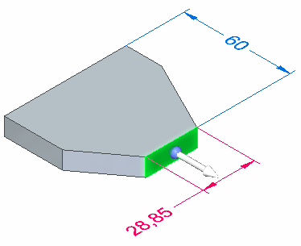
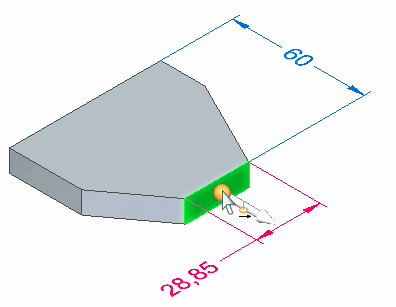
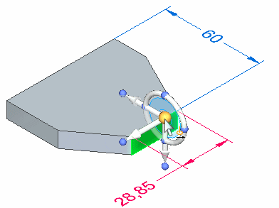
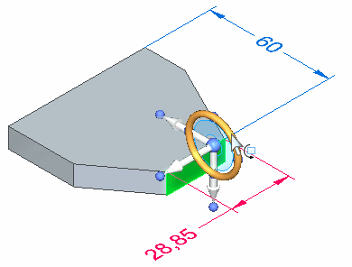
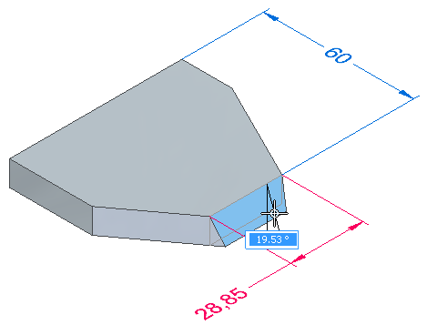
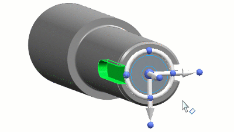
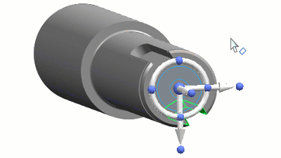
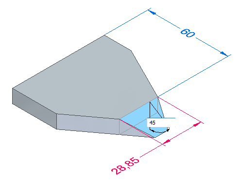

Rotate part geometry using the steering wheel
In a synchronous part, sheet metal, assembly, or subdivision model, you can rotate part geometry with the steering wheel instead of moving it.
-
Choose Home tab→Select group→Select.

-
Position the cursor over the face you want to rotate, and when it highlights, click to select it.

The command bar updates to show the default option, Move.

The axis and origin of the steering wheel move handle display.

-
Position the cursor over the origin on the steering wheel, and click to select it.

The 3D steering wheel is attached to the cursor.
-
Position the cursor over a linear model edge that defines the rotation axis for the face you want to rotate. When the edge highlights, and the steering wheel aligns itself properly, click to position the steering wheel. Use Shift+click to move the steering wheel without changing its orientation.

-
Position the cursor over the torus on the steering wheel, and click to select it.

The command bar updates to show you selected the Rotate option, and PromptBar displays options for rotating the face.

-
Specify the extent of the rotation. Do one of the following:
-
Move the cursor until the face is positioned approximately where you want it, and then click.

-
Define the rotation extent by snapping to intervals—As you rotate the face, rotation snaps in 90-degree increments (90, 180, 270, 0) around the tool plane,

Or at 15-degree increments if you press and hold the Shift key while moving the cursor.

Click to finish rotating the face.
-
To define the rotation extent precisely, type a value in the dynamic input box and press Enter.

-
-
Select another face to move or rotate, or press Esc to exit the command.
-
To rotate selections properly, the axis on the steering wheel must be aligned with the rotation axis you want. You can position the steering wheel using linear edges, cylindrical faces, and sketch elements.
-
You can also use the Keypoints option on the Move or Rotate command bar to specify a keypoint type, then select a keypoint on the model to define the extent of the rotate operation.
When rotating in increments, keypoints take precedence over other snap points.
-
You can use the Connected Faces options on the command bar to control how the adjacent faces react to the move or rotate operation.
-
You can use the Advanced Design Intent panel to control how the model reacts to the move or rotate operation.